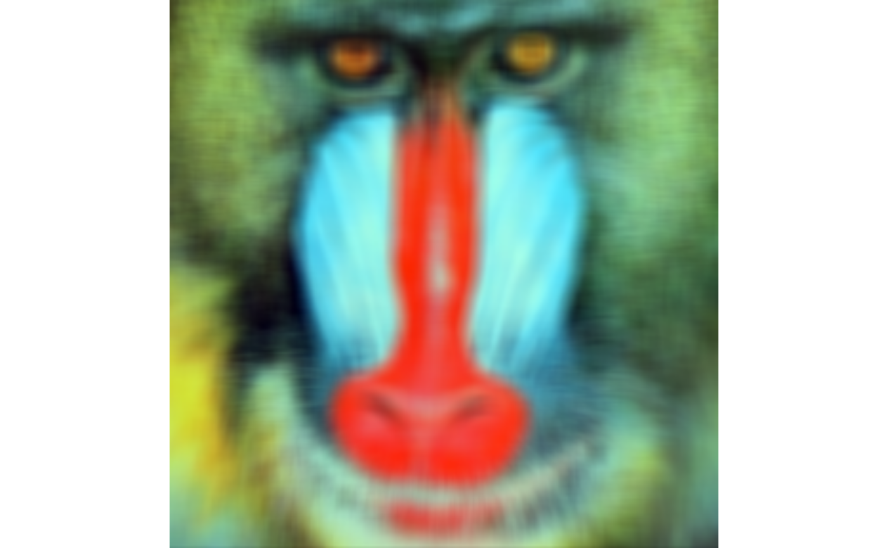

Overview
rimager is a R package that provides a quick and easy way to do image processings and graphic editings. The package includes four functionalities: reduce the size of the image, crop the image into a circle, reduce the image colors, and blur or sharpen the image.
Functions
imgfilter(input_path, filter_type, strength, output_path = NULL))
Description:
The filter types include ‘blur’ and ‘sharpen’; where blur blends neighboring pixels and sharpen enhances edges. The strength of the filter indicates how much of effect is apllied to the image; where 0 is no effect and 1 is very strong effect.
Arguments:
input_path: character the file path of the image filter_type: character filter to be applied to the input image. options: ‘blur’ and ‘sharpen’ strength: numeric or integer (0 to 1) the strength of the selected filter effect output_path: character or NULL (default NULL); the file path of the resultant image
Examples
We will use mandrill.jpg saved in the images folder of this repository.

imgfilter
mandrill_imgfilter <- imgfilter("../images/mandrill.jpg", "blur", 0.4)
imageShow(mandrill_imgfilter)